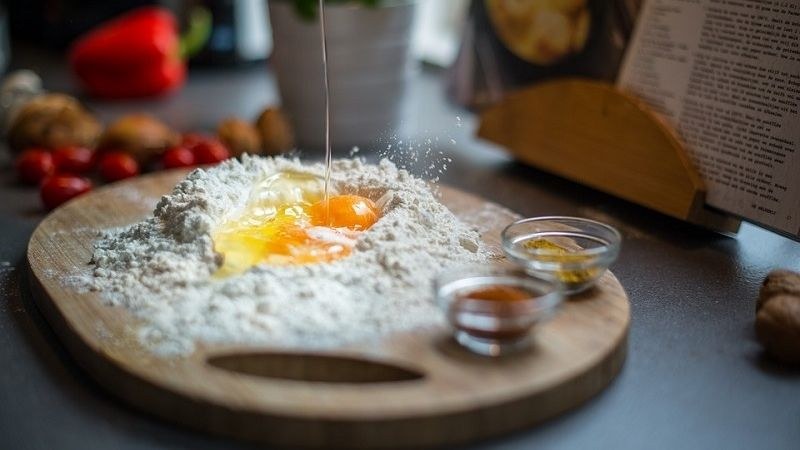
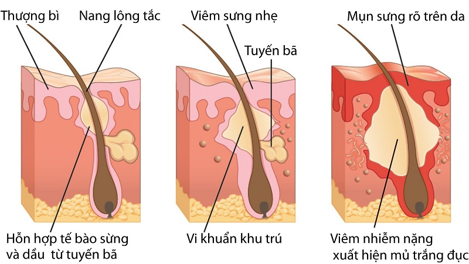

Trong trứng có rất nhiều vitamin A, D, E, B1, B6, B12… và một số chất khoáng như magie, canxi, kẽm, sắt.
Là nguồn protein dồi dào và chứa 1 số loại axit tốt cho hệ miễn dịch, đặc biệt đối với chị em phụ nữ thì lòng trắng trứng chính là thần dược giúp chống lão hóa cho làn da. Protein trong trứng còn có vai trò quan trọng trong việc sửa chữa mô và thắt chặt da.
Vitamin D trong trứng gà giúp tiêu thụ canxi làm cho xương chắc khỏe. Vì vậy những ai có triệu chứng loãng xương thì cần bổ sung trứng vào thực đơn hàng ngày.
Trong trứng gà rất giàu vitamin E, vi chất này giúp chống oxy hóa cực mạnh, ngăn ngừa các gốc tự do, các bức xạ tia cực tím từ ánh nắng mặt trời và ngăn ngừa tình trạng lão hóa.
Hàm lượng các chất dinh dưỡng chứa trong lòng đỏ trứng như chất béo lành mạnh, chất sắt, canxi cũng có tác dụng chống da chảy xệ, xóa mờ nếp nhăn rất công hiệu.
Chỉ cần xắt nhỏ 1 quả chuối chín, xay nhuyễn cùng 1 quả trứng gà là bạn đã có một loại mặt nạ chống lão hóa trên cả tuyệt vời.
Theo nhiều nghiên cứu, trong vỏ trứng và lòng đỏ trứng gà chứa 2 loại collagen là collagen type I (có trong các mô, xương,..) và collagen type V (có trong tóc, bề mặt tế bào,...).
Để hấp thụ lượng collagen này để tăng sinh collagen từ bên trong, cách tốt nhất là ăn trứng mỗi ngày.
Lòng trắng trứng gà giúp điều trị mụn hiệu quả khá tốt nhờ vào enzym Lysozyme, enzym này giúp tiêu diệt vi khuẩn, làm sạch bã nhờn.
Vitamin B2 và B3 kèm trong trứng gà giúp da mặt được kháng khuẩn và ngăn chặn quá trình hình thành mụn cám, mụn bọc trên da.
Lấy hạnh nhân bóc vỏ rồi giã nhuyễn, trộn đều với lòng trắng trứng rồi thoa đều lên mặt. Để tăng tính hiệu quả bạn nên thoa hỗn hợp vào ban đêm đến sáng hôm sau dậy rửa sạch bằng nước ấm. Đây là cách trị mụn bọc bằng trứng gà hiệu quả nhất mà bạn có thể áp dụng.
Các chuyên gia y tế và dinh dưỡng Mỹ đã tiến hành một cuộc thử nghiệm về phòng và điều trị xơ vữa động mạch từ trứng gà.
Họ trích xuất chất lecithin có trong trứng gà, quả óc chó, mỗi ngày cho người mắc bệnh tim mạch ăn 4 -6 thìa canh. Khoảng ba tháng sau, lượng cholesterol trong máu của người bệnh giảm đáng kể.